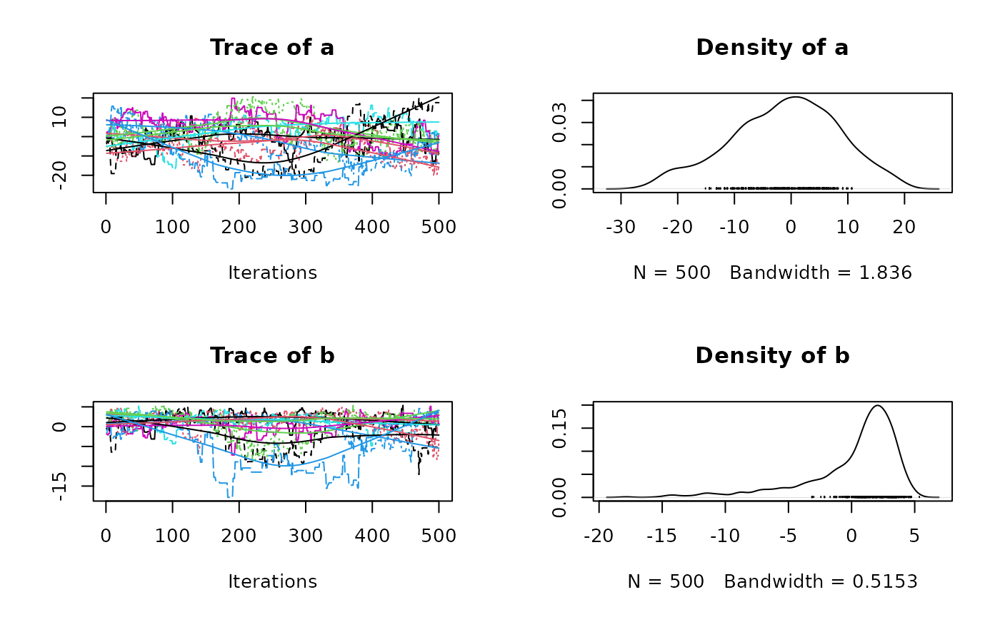
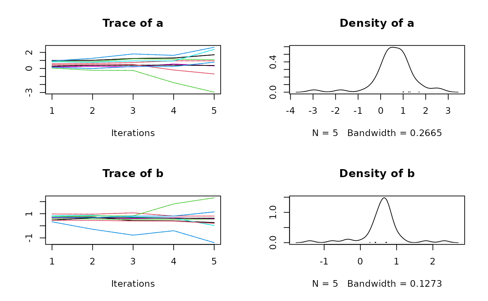
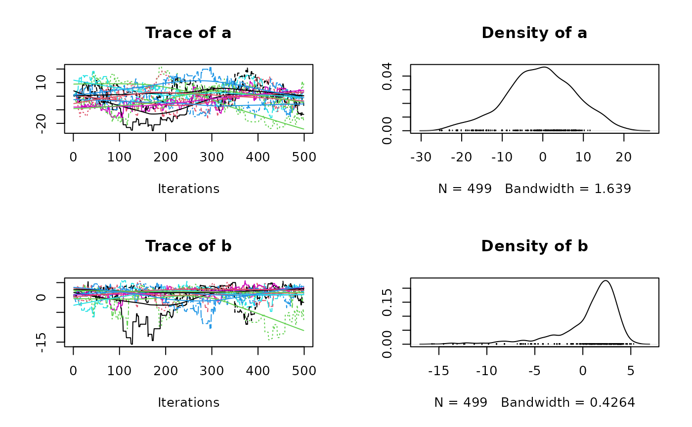

vignettes/blog/blog_v3.Rmd
blog_v3.RmdIn previous mcmcensemble versions, the starting values of the various
were drawn from an uniform distribution whose bounds were determined by
the values of lower.inits and upper.inits.
In this new version, the user is in charge of providing a matrix (or a data.frame) containing all the starting values for all the parameters for all the chains. If this increases somewhat the complexity of the package and the workload of the user, it has huge benefits that we will present now.
library(mcmcensemble)
packageVersion("mcmcensemble")## [1] '3.1.0.9000'The main drawback from the previous behaviour is that it was not
possible to sample the initial values from something else than a uniform
distribution. You can now do this. If we take the ‘banana’ example from
the README and want to start with values samples from a
normal distribution centered on 0 with a standard deviation of 2, we
do:
## a log-pdf to sample from
p.log <- function(x) {
B <- 0.03 # controls 'bananacity'
-x[1]^2 / 200 - 1/2 * (x[2] + B * x[1]^2 - 100 * B)^2
}
## set options and starting point
n_walkers <- 10
unif_inits <- data.frame(
"a" = rnorm(n_walkers, mean = 0, sd = 2),
"b" = rnorm(n_walkers, mean = 0, sd = 1)
)
res <- MCMCEnsemble(p.log, inits = unif_inits,
max.iter = 5000, n.walkers = n_walkers,
method = "stretch", coda = TRUE)## Using stretch move with 10 walkers.
summary(res$samples)##
## Iterations = 1:500
## Thinning interval = 1
## Number of chains = 10
## Sample size per chain = 500
##
## 1. Empirical mean and standard deviation for each variable,
## plus standard error of the mean:
##
## Mean SD Naive SE Time-series SE
## a 0.30573 9.880 0.13973 1.2927
## b 0.03527 3.792 0.05363 0.4427
##
## 2. Quantiles for each variable:
##
## 2.5% 25% 50% 75% 97.5%
## a -18.76 -6.733 0.3816 6.586 19.204
## b -11.41 -1.435 1.1781 2.682 4.329
plot(res$samples)
It is also a good opportunity to set quasi-random starting values that maximises to exploration of the available space. One example of a such quasi-random distribution is the Owen-scrambled Sobol sequence available in the spacefillr package.
n_walkers <- 10
sobol_inits <- setNames(
spacefillr::generate_sobol_owen_set(n_walkers, dim = 2),
c("a", "b")
)
res <- MCMCEnsemble(p.log, inits = sobol_inits,
max.iter = 5000, n.walkers = n_walkers,
method = "stretch", coda = TRUE)## Using stretch move with 10 walkers.
summary(res$samples)##
## Iterations = 1:500
## Thinning interval = 1
## Number of chains = 10
## Sample size per chain = 500
##
## 1. Empirical mean and standard deviation for each variable,
## plus standard error of the mean:
##
## Mean SD Naive SE Time-series SE
## para_1 2.93060 9.384 0.13270 1.1834
## para_2 0.02642 3.984 0.05634 0.5557
##
## 2. Quantiles for each variable:
##
## 2.5% 25% 50% 75% 97.5%
## para_1 -14.37 -3.512 2.231 9.382 22.853
## para_2 -13.06 -1.078 1.326 2.514 4.188
plot(res$samples)Another new possibility thanks to this new behaviour in mcmcensemble
3.0.0 is the option to restart a chain from where it ended. Let’s use
again the ‘banana’ example from the README but let’s cut it
short:
## a log-pdf to sample from
p.log <- function(x) {
B <- 0.03 # controls 'bananacity'
-x[1]^2 / 200 - 1/2 * (x[2] + B * x[1]^2 - 100 * B)^2
}
## set options and starting point
n_walkers <- 10
unif_inits <- data.frame(
"a" = runif(n_walkers, 0, 1),
"b" = runif(n_walkers, 0, 1)
)
## use stretch move
short <- MCMCEnsemble(p.log, inits = unif_inits,
max.iter = 50, n.walkers = n_walkers,
method = "stretch", coda = TRUE)## Using stretch move with 10 walkers.
summary(short$samples)##
## Iterations = 1:5
## Thinning interval = 1
## Number of chains = 10
## Sample size per chain = 5
##
## 1. Empirical mean and standard deviation for each variable,
## plus standard error of the mean:
##
## Mean SD Naive SE Time-series SE
## a 0.4068 0.4529 0.06404 0.02988
## b 0.5809 0.4287 0.06063 0.02890
##
## 2. Quantiles for each variable:
##
## 2.5% 25% 50% 75% 97.5%
## a -0.3453 0.1170 0.4451 0.6667 1.453
## b -0.4300 0.4385 0.6109 0.7678 1.455
plot(short$samples)
You may notice that this example has a very low number of iteration. We may want to let it run a little bit more. We can restart the chain from where it ended with:
last_values <- do.call(rbind, lapply(short$samples, function(c) c[nrow(c), ]))
longer <- MCMCEnsemble(p.log, inits = last_values,
max.iter = 4950, n.walkers = n_walkers,
method = "stretch", coda = TRUE)## Using stretch move with 10 walkers.
# `final` is the concatenation of `short` and `longer`
# However, we need to remove the first element of `longer` since it's already
# present in `short`
final <- list(
samples = coda::as.mcmc.list(lapply(seq_along(longer$samples), function(i) {
coda::as.mcmc(rbind(short$samples[[i]], longer$samples[[i]][-1, ]))
})),
log.p = cbind(short$log.p, longer$log.p[, -1])
)
plot(final$samples)
For non-coda outputs, here is the equivalent coda snippet:
short <- MCMCEnsemble(p.log, inits = unif_inits,
max.iter = 50, n.walkers = n_walkers,
method = "stretch")## Using stretch move with 10 walkers.
last_values <- short$samples[, dim(short$samples)[2], ]
longer <- MCMCEnsemble(p.log, inits = last_values,
max.iter = 4950, n.walkers = n_walkers,
method = "stretch")## Using stretch move with 10 walkers.
# `final` is the concatenation of `short` and `longer`
# However, we need to remove the first element of `longer` since it's already
# present in `short`
final <- list(
samples = array(unlist(lapply(seq_len(dim(longer$samples)[3]), function(i) {
cbind(longer$samples[,, i], short$samples[,, i])
})), dim = dim(short$samples) + c(0, dim(longer$samples)[2], 0)),
log.p = cbind(short$log.p, longer$log.p[, -1])
)As mentioned in the introduction of this blog post, the prior
distribution in previous versions of mcmcensemble was always a uniform
distribution between lower.inits and
upper.inits. It means that your previous code snippets:
MCMCEnsemble(
p.log,
lower.inits = c(-5, -15), upper.inits = c(5, 15),
max.iter = 500, n.walkers = 10,
method = "stretch", coda = TRUE
)must be updated to:
MCMCEnsemble(
p.log,
inits = runif(10, min = c(-5, -15), max = c(5, 15)),
max.iter = 500, n.walkers = 10,
method = "stretch", coda = TRUE
)